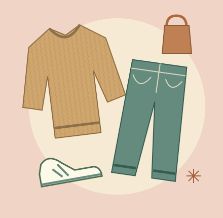

Find your kind of shop.
Everyday basics, expressive vintage, or something for your room: explore four fictional shops with four different personalities.
Browse the thrift shops ↗A fictional local guide · Iowa City, IA
Your Iowa City thrifting guide to a little less new and a little more you. Explore imagined shops, find your vintage mood, and learn to spot the pieces you'll actually wear.
Pick your starting point
One guide, three ways in. Start with a shop, a style, or a few useful habits.
Everyday basics, expressive vintage, or something for your room: explore four fictional shops with four different personalities.
Browse the thrift shops ↗A cozy campus outfit or a dressed-up evening look. Start with a secondhand piece and build from what you already own.
Explore vintage clothing ↗Check the seams, know your budget, and skip the almost-right find. A short checklist makes browsing feel easier.
Read the thrifting tips ↗
The outfit idea
You don't need a whole new wardrobe. Try a textured knit with your favorite jeans, or let a vintage blazer give your usual outfit a different mood.
See the campus-layers edit ↗A note about this guide
Thrift IC is an AI-created, fictional website inspired by student life and secondhand style in Iowa City. The shops, price examples, and profiles in the directory are invented for a University of Iowa digital marketing project.
This is a place to explore a website concept and practical shopping ideas. The fictional shop profiles are not a real-world directory, and there are no store visits or purchases to book here.
Start with the beginner's guide ↗